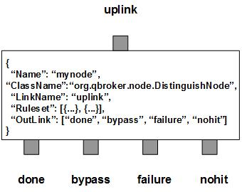

DistinguishNode is a filter node that applies the distinction operation on each incoming messages to remove the duplicated copies according to their keys and optional versions. It filters messages into four outlinks: done for all distinct messages, bypass for those duplicate messages, failure for those messages failed in the distinguishing processes, and nohit for all the messages that do not hit any explicitly defined ruleset.
DistinguishNode contains a number of predefined rulesets. These rulesets categorize messages into non-overlapping groups. Therefore, each rule defines a unique message group. The ruleset also specifies the parameters to control the message filtering process on the group, such as KeyTemplate. If KeyTemplate is defined for a ruleset, it is the ruleset for distinction. DistinguishNode maintains a global cache for all the keys in order to track them. Furthermore, the content filtering can be enabled or disabled dynamically via the sessions and monitors. If SessionTimeout is set to 0, it will only do static filtering. The number of the keys cached is tracked via the RULE_PEND field for each rule. If VersionTemplate is defined in a ruleset, DistinguishNode will retrieve the version info from the messages to enforce the version control. It means the messages with older versions will be treated as the duplicates. DistinguishNode also creates one extra ruleset by default for all nohit messages. The reserved word, nohit, is the name of this default ruleset.
DistinguishNode also supports the cache ruleset which is similar to a regular distinction ruleset. The only difference on the configurations is that the former has also defined RuleType as "cache". However, the routing policy for a cache ruleset is different from what of the distinction ruleset. It is designed for message flow clusters only. Even though both distinction rulesets and cache rulesets are defined for the node, their activities are mutually exclusive on any given instance of the node. Therefore, a DistinguishNode with active cache rulesets is called on the cache mode.
One of the use cases of cache rulesets is that an active-passive message flow cluster with the only one DistinguishNode. In this case, the master flow processes all the incoming messages. By desing, those messages only activate the distinction rulesets of the DistinguishNode. As the contrast, the worker flow does not process any incoming messages. Therefore, the distinction rulesets of the DistinguishNode are not active at all. Meanwhile, the master flow also escalates each processed message to the worker flow via the cluster communication channels. On the worker side, the container of the worker flow is supposed to forward the escalated messages to the DistinguishNode. Those escalated messages are supposed to activate the cache rulesets of the DistinguishNode. Once an escalated message arrives, the DistinguishNode on the cache mode extracts the key from the message and saves it to the global cache. The cache ruleset on the worker flow has a different routing policy. Since those messages have already been processed on the master, the messages with the unique keys will be routed to nohit outlink. The rest of the messages will be routed to failure outlink, if there is any. This way the cache on the worker flow always keeps in sync with the master. When a failover occurs, the worker flow with the latest cache will be ready to be promoted to the new master. Since the cache on the new master is current, any duplicated message will not be routed to the done outlink. If you are going to implement the active-passive message flow cluster with a DistinguishNode with cache rules, please make sure its uplink has the 2nd half of the cells unused. The unused partition will be reserved for escalations so that the container is able to forward the escalations.
DistiguishNode always adds an extra ruleset for the nohit messages. This nohit ruleset is always the first ruleset with the id of 0. On the node level, DisplayMask and StringProperty control the display result of outgoing messages.
You are free to choose any names for the four fixed outlinks. But DistiguishNode always assumes the first outlink for done, the second for bypass, the third for failure and the last for nohit. The outlink of failure or nohit can share the same name with the first two others. It means these outlinks may share the same output channel.
Apart from the common properties, there are some implementation specific properties for DistinguishNode.
| Property Name | Data Type | Requirement | Description | Examples |
|---|---|---|---|---|
| SessionTimeout | integer | optional | timeout of the session for failover in seconds | 120 (default: 300) |
| Heartbeat | integer | optional | interval in sec to check sessions | 30 (default: 60) |
| CacheTimeout | integer | optional | timeout in sec for the cache to be disfragmented | 3600 (default: 0) |
| CacheThreshold | integer | optional | threshold for the cache to be disfragmented | 200000 (default: 0) |
The distinguish operation is executed via the pre-defined rulesets. Therefore, the configuration of the rulesets is critical to the operations of DistinguishNode. Here are complete properties of rulesets for DistinguishNode.
| Property Name | Data Type | Requirement | Description | Examples |
|---|---|---|---|---|
| Name | alphanumeric with no spaces | mandatory | name of the ruleset | event |
| RuleType | string | optional | type of the ruleset | cache |
| KeyTemplate | string | optional | template for the unique key | ##site## |
| KeySubstitution | string | optional | text subsctitution for the unique key | s/^0// |
| VersionTemplate | string | optional | template for the version | ##JMSTimestamp## |
| TimePattern | string | optional | time patterh to parse the version | yyyy-MM-dd HH:mm:ss.SSS |
| PreferredOutLink | alphanumeric with no spaces | mandatory for bypass only | name of the preferred outlink | bypass |
| FormatterArgument | list | optional | list of post format operations | see example |
| JMSPropertyGroup | list | optional | list of pattern groups on properties to select messages | see example |
| XJMSPropertyGroup | list | optional | list of pattern groups on properties to exclude messages | see example |
| PatternGroup | list | optional | list of pattern groups on body to select messages | see example |
| XPatternGroup | list | optional | list of pattern groups on body to exclude messages | see example |
| StringProperty | map | optional | for setting the user properties on the messages | see example |
{
...
"Ruleset": [{
"Name": "bypass",
"PreferredOutLink": "BYPASS",
"JMSPropertyGroup": [{
"JMSType": "^score$"
}]
}],
...
}
where it sends the messages to the outlink of BYPASS without processing them.
Here is an example of the distinguish ruleset.
{
...
"Ruleset": [{
"Name": "first_job",
"JMSPropertyGroup": [{
"messageType": "8",
"timeStamp": "."
}],
"TimeToLive": "7200",
"KeyTemplate": "##guid##/##status##"
}],
...
}
where it extracts the key from the message and checks the key existence in the
cache. If no, the message will be routed to the first outlink and the key will
be added to the cache. Otherwise, the message is a duplicate. The duplicate
messages will be routed to bypass outlink.
Here is an example of the cache ruleset.
{
...
"Ruleset": [{
"Name": "cache_job",
"RuleType": "cache",
"JMSPropertyGroup": [{
"messageType": "8",
"timeStamp": "."
}],
"TimeToLive": "7200",
"KeyTemplate": "##guid##/##status##"
}],
...
}
where it checks the key in the cache and adds it to the cache.
Here is an example of DistinguishNode:
{
"Name": "node_distinct",
"ClassName": "org.qbroker.node.DistinguishNode",
"Description": "propagate distinct messages",
"Operation": "distinguish",
"LinkName": "MAS",
"Capacity": "32",
"DisplayMask": "0",
"Debug": "11",
"Heartbeat": "300",
"SessionTimeout": "1800",
"Threshold": "0,50,100",
"Ruleset": [{
"Name": "cache_file",
"RuleType": "cache",
"JMSPropertyGroup": [{
"category": ".",
"messageType": "6"
}],
"TimeToLive": "7200",
"KeyTemplate": "##serverIP##/##timeStamp##/##notificationType##/##fileURL##"
},{
"Name": "first_file",
"JMSPropertyGroup": "
"messageType": "6",
"timeStamp": "."
}],
"TimeToLive": "7200",
"KeyTemplate": "##serverIP##/##timeStamp##/##notificationType##/##fileURL##"
}],
"OutLink": ["OMN", "MAS_BACKUP", {
"Name": "failure",
"Capacity": "128",
"Partition": "32,32"
},{
"Name": "null",
"Capacity": "128",
"Partition": "32,32"
}]
}
where the node is on the cache mode. Since the uplink, MAS, has the
capacity of 32, the partition of (16, 16) is supposed to be reserved for
escalations.